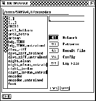

The file browser handles all load and save operations of networks, patterns, configurations, and the contents of the text window. Configurations include number, location and dimension of the displays as well as their setup values and the name of the layers.

In the top line, the path ( without trailing slash) where the
files are located is entered. This can be done either manually, or by
double--clicking on the list of files and directories in the box on
the left. A double click to [..] deletes the last part of the path,
and a double click to a subdirectory appends that directory to the
path. In the input field below the path field, the name for the
desired file (without extension) is entered. Again, this can be done
either manually, or by double--clicking on the list of files in the
box on the left. Whether a pattern file, network file, or other file is
loaded/saved depends on the settings of the corresponding buttons
below. With the setting of picture  a network file
would be selected. A file name beginning with a slash (/) is taken to
be an absolute path.
a network file
would be selected. A file name beginning with a slash (/) is taken to
be an absolute path.
Note: The extension .net for nets, .pat for patterns, .cfg for configurations, and .txt for texts is added automatically and must not be specified. After the name is specified the desired operation is selected by clicking either or . In the case of an error the confirmer appears with an appropriate message. These errors might be:
Depending upon the error and the response to the confirmer, the action is aborted or executed anyway.
NOTE: The directories must be executable in order to be processed properly by the program!